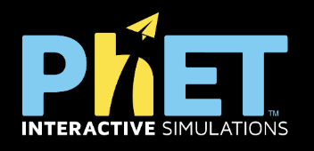

OER Resources for Learning
Understanding Open Educational Resources
Open Educational Resources (OER) are freely accessible, openly licensed materials that transform traditional learning paradigms. These educator-created resources empower students to:
• Access high-quality materials without cost barriers
• Adapt content to personal learning needs
• Engage with interactive, multimodal learning tools
• Collaborate in global knowledge-sharing communities
In my classroom, OERs serve as foundational tools for differentiated instruction and self-directed learning journeys.
All OER materials are published under Creative Commons (CC) licenses, which clarify how content can be reused, remixed, or shared. Understanding these licenses is key to ethical and effective use of OER.
CK-12 Foundation
Multimodal learning platform offering adaptive practice, interactive simulations, and competency-based progress tracking across STEM disciplines.
Utilize for pre-assessment diagnostics, flipped classroom models, and individualized math remediation pathways.
Explore adaptive learning at ck12.org
PhET Interactive Simulations
Research-based virtual labs that promote scientific inquiry through gamified experimentation and discovery learning.
Employ as pre-lab conceptual frameworks, hypothesis-testing environments, or phenomena-based learning anchors.
Interactive STEM exploration: phet.colorado.edu
OER Commons Hub
Global repository featuring peer-reviewed, standards-aligned resources with advanced filtering and remix capabilities.
Leverage for project-based learning resources, cross-cultural content, and open pedagogy development.
Global OER repository: oercommons.org
Khan Academy
Personalized learning paths with mastery tracking and micro-credentialing across academic domains.
Utilize for competency-based progression, gap analysis, and metacognitive skill development through video annotations.

Personalized learning platform: khanacademy.org
The 5 Rs of Open Educational Resources
Retain – Keep and control copies of the content
Reuse – Use the content in a wide range of ways
Revise – Adapt, adjust, modify, or alter the content
Remix – Combine original or revised content with other open content
Redistribute – Share copies of the original or your new version
This framework empowers students and educators to take ownership of their learning materials, promoting customization and innovation in the classroom.
OER content adapted from resources on OER Commons and paraphrased with assistance from DeepSeek. Original content created by Hannah Terkper. Licensed under CC BY 4.0.